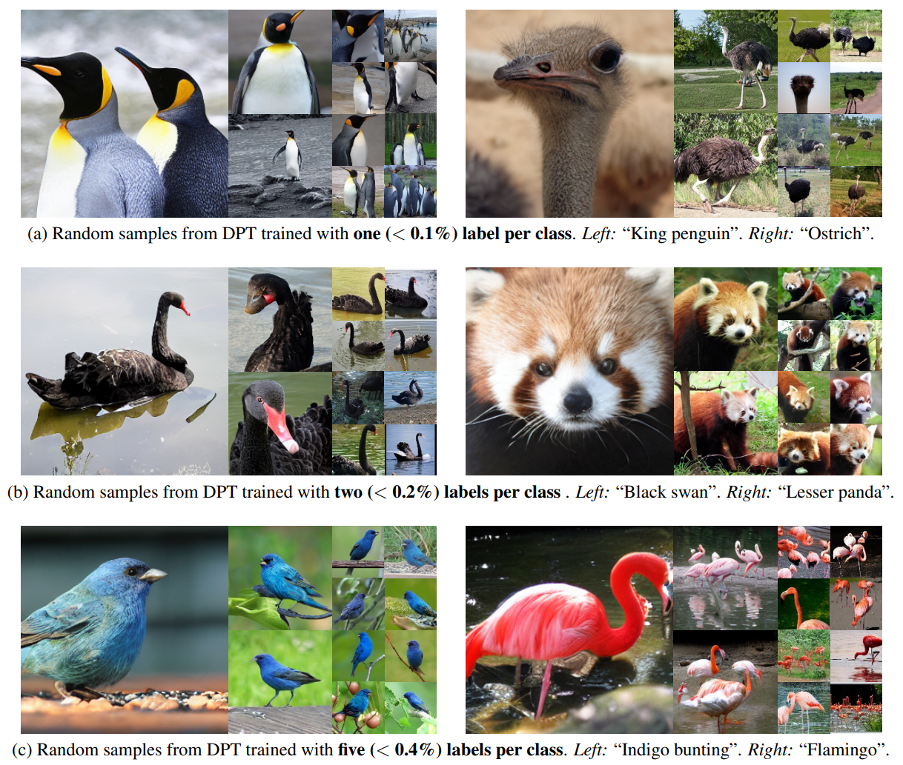
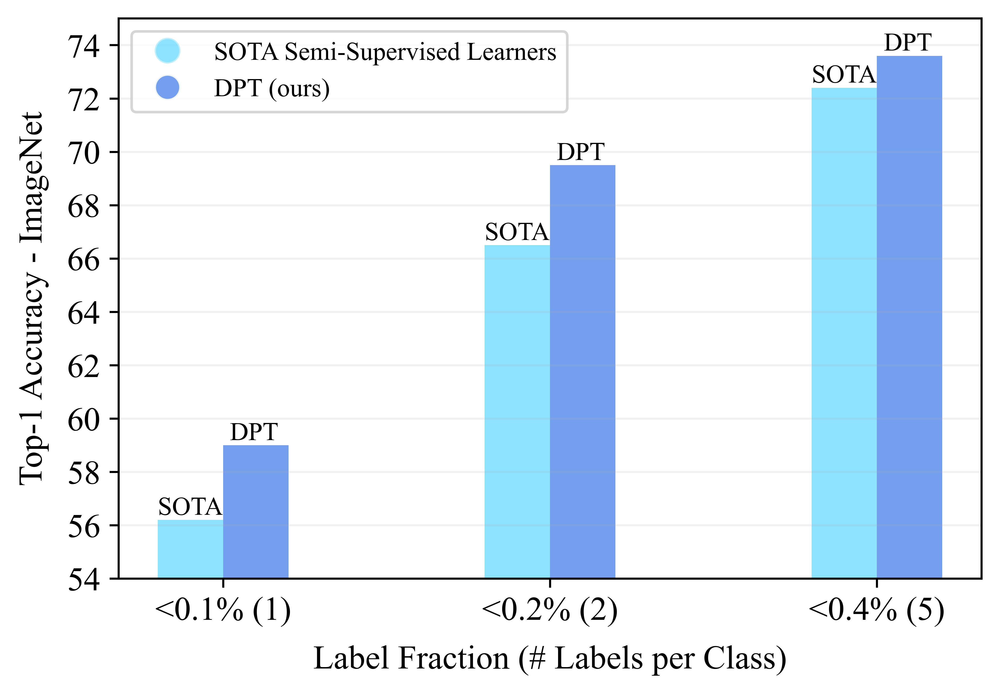
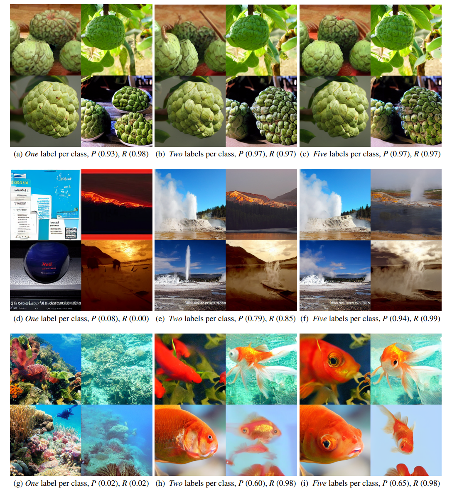

Diffusion Models and Semi-Supervised Learners Benefit Mutually with Few Labels

We propose a three-stage training strategy called dual pseudo training (DPT) for conditional image generation and classification in semi-supervised learning. First, a classifier is trained on partially labeled data and predicts pseudo labels for all data. Second, a conditional generative model is trained on all data with pseudo labels and generates pseudo images given labels. Finally, the classifier is trained on real data augmented by pseudo images with labels. We demonstrate large scale diffusion models and semi-supervised learners benefit mutually with a few labels via DPT. In particular, on the ImageNet 256×256 generation benchmark, DPT can generate realistic, diverse, and semantically correct images with very few labels. With two (i.e., < 0.2%) and five (i.e., < 0.4%) labels per class, DPT achieves an FID of 3.44 and 3.37 respectively, outperforming strong diffusion models with full labels, such as IDDPM, CDM, ADM, and LDM. Besides, DPT outperforms competitive semi-supervised baselines substantially on ImageNet classification benchmarks with one, two, and five labels per class, achieving state-of-the-art top-1 accuracies of 59.0 (+2.8), 69.5 (+3.0), and 73.6 (+1.2) respectively.
First, a (self-supervised) classifier is trained on partially labeled data and used to predict pseudo labels for all data. Second, a (diffusion-based) conditional generative model is trained on all data with pseudo labels and used to generate pseudo images given random labels. Finally, the classifier is trained or fine-tuned on real data augmented by pseudo images with labels.
DPT with < 0.4% labels outperforms strong supervised diffusion models, including CDM(Ho et al., 2022), ADM(Dhariwal & Nichol, 2021) and LDM(Rombach et al., 2022). The bubble area indicates the label fraction.
With one, two, five labels per class, DPT improves the state-of-the-art semi-supervised learner MSN(Assran et al., 2022) consistently and substantially.
More real labels result in smaller noise in pseudo labels and samples of better visual quality and correct semantics. Top: “Custard apple”. Middle: “Geyser”. Bottom: “Goldfish”.
For a given class y, the precision and recall w.r.t. the classifier is defined by P = TP/(TP + FP) and R = TP/(TP + FN), where TP, FP, and FN denote the number of true positive, false positive, and false negative samples respectively.
This paper presents a training strategy DPT for conditional image generation and classification in semi-supervised learning. DPT is simple to implement and achieves excellent performance in both tasks on ImageNet. DPT probably inspires future work in semi-supervised learning
@article{you2023diffusion,
title={Diffusion Models and Semi-Supervised Learners Benefit Mutually with Few Labels},
author={You, Zebin and Zhong, Yong and Bao, Fan and Sun, Jiacheng and Li, Chongxuan and Zhu, Jun},
booktitle={arXiv preprint arXiv:2302.10586},
year={2023}
}